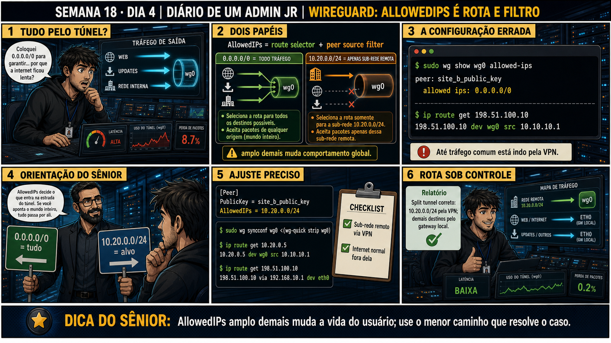

Semana 18 · Dia 4 | Nível Júnior — Redes
AllowedIPs é Rota e Filtro
o mesmo campo decide o que sai e o que entra — dependendo de qual lado você está lendo
ANTES DE ALTERAR, OBSERVE. DEPOIS DE ALTERAR, VALIDE.
1. O chamado
#1804
PRIORIDADE ALTA
14:30
aberto por: usuário afetado
host: notebook de um analista · serviço: acesso à internet e à VPN
"Configurei AllowedIPs = 0.0.0.0/0 no notebook de um analista achando que isso só ia liberar tudo pra ele acessar via túnel — e agora TODO o tráfego dele, até o acesso normal à internet, está passando pelo Site A."
O técnico tratou AllowedIPs só como uma regra de aceitação, esquecendo que no lado cliente ela também vira rota de saída. O que deveria ter sido configurado no lugar de 0.0.0.0/0?
💡 Passa o mouse nas palavras destacadas pra ver uma dica rápida — clica se quiser a explicação completa com analogia.
2. Antes de ver as opções — tenta responder
🧠 Recall ativo: por que o mesmo campo AllowedIPs, com o mesmo valor 0.0.0.0/0, produz um efeito tão
diferente dependendo de estar no [Peer] do lado que INICIA (cliente) ou no [Peer] do lado que RECEBE (servidor)?
No lado cliente, AllowedIPs = 0.0.0.0/0 no bloco [Peer] do servidor vira uma ROTA que manda TODO o tráfego
de saída, sem exceção, pelo túnel — é o chamado
full tunnel.
No lado servidor, o mesmo valor no [Peer] do cliente vira um FILTRO de aceitação: qualquer pacote alegando
vir daquele cliente é aceito, de qualquer origem. É rota de um lado, filtro do outro — a mesma linha de
configuração fazendo dois trabalhos diferentes, dependendo de qual peer você está olhando.
3. Questão comentada — clica numa alternativa
O analista só queria acessar a rede interna 10.10.10.0/24 do Site A pelo túnel,
mantendo o resto do tráfego (internet normal) fora dele. Qual configuração de AllowedIPs no notebook do
analista resolve isso?
💡 Analogia do Sênior para Fixar: O princípio fundamental de 04 ALLOWEDIPS ROTA é como o alicerce de sustentação de um viaduto: garante que a estrutura de comunicação suporte alto tráfego sem colapsar.
4. Decodificador de conceitos
Clica em qualquer termo pra ver a definição completa e uma analogia do dia a dia:
5. Ferramentas e leitura da evidência
| Comando | O que faz |
|---|---|
ip route | Mostra as rotas ativas, incluindo as criadas automaticamente pelo wg-quick a partir do AllowedIPs. |
wg show wg0 allowed-ips | Lista o AllowedIPs configurado por peer, direto da interface ativa. |
--- Split tunnel: só a rede interna passa pelo túnel --- [Peer] PublicKey = site_a_public_key Endpoint = 203.0.113.10:51820 AllowedIPs = 10.10.10.0/24 # tráfego pra internet normal continua fora do túnel $ ip route | grep wg0 10.10.10.0/24 dev wg0 scope link --- Full tunnel: TUDO passa pelo túnel (o que causou o chamado) --- [Peer] PublicKey = site_a_public_key Endpoint = 203.0.113.10:51820 AllowedIPs = 0.0.0.0/0 # toda rota de saída, inclusive internet normal, agora passa por wg0 $ ip route | grep wg0 0.0.0.0/0 dev wg0 scope link 10.10.10.0/24 dev wg0 scope link
5.1 O painel 4 da prancha de hoje mostra o lado servidor recebendo um pacote de um IP fora do AllowedIPs configurado pro peer
O servidor tem AllowedIPs = 10.99.0.2/32 pro peer do notebook. Um pacote chega dizendo vir de 10.99.0.9, usando a chave certa do peer.
O que o servidor faz com esse pacote, mesmo a chave estando correta?
💡 Analogia do Sênior para Fixar: Diagnosticar anomalias em 04 ALLOWEDIPS ROTA é como o eletricista usando o multímetro no quadro de disjuntores: mede a passagem de sinal no ponto exato da falha.
5.2 "Se eu colocar várias sub-redes no AllowedIPs, separadas por vírgula, o que acontece?"
Um colega quer que o notebook alcance duas redes internas diferentes pelo mesmo túnel, sem virar full tunnel.
Por que AllowedIPs = 10.10.10.0/24, 10.20.20.0/24 é uma configuração válida e ainda
assim um split tunnel?
💡 Analogia do Sênior para Fixar: Aplicar as boas práticas de 04 ALLOWEDIPS ROTA é como o protocolo de segurança da aviação: elimina pontos únicos de falha e garante previsibilidade operacional.
6. Procedimento profissional
- No lado que INICIA, defina AllowedIPs só com as sub-redes que realmente precisam passar pelo túnel — não use 0.0.0.0/0 sem necessidade explícita de full tunnel.
- No lado que RECEBE, confirme que o AllowedIPs pra cada peer cobre exatamente o IP esperado daquele peer, nem mais nem menos.
- Depois de subir o túnel, confirme as rotas criadas com ip route | grep wg0.
- Se precisar de várias sub-redes, liste todas separadas por vírgula no mesmo AllowedIPs.
- Documente qual peer é full tunnel e qual é split tunnel — isso muda completamente o comportamento esperado do usuário.
7. Laboratório guiado — marca conforme for testando
Segurança: execute os testes apenas em VMs descartáveis e confirme nomes de discos, hosts e arquivos antes de cada comando.
- No túnel montado no Dia 3, configure AllowedIPs = 0.0.0.0/0 no lado cliente e suba de novo.# em wg0.conf, no bloco [Peer] do lado cliente: AllowedIPs = 0.0.0.0/0 $ sudo wg-quick down wg0 && sudo wg-quick up wg0 $ ip route | grep wg0
🔍 Detalhar esse comando
- wg-quick down wg0 && wg-quick up wg0
- Derruba e sobe a interface de novo — necessário porque wg-quick aplica as rotas do AllowedIPs só na hora de subir; editar o arquivo sozinho não atualiza uma interface já ativa.
- ip route | grep wg0
- Mostra as rotas ativas que passam pela interface do túnel — confirma exatamente o que o AllowedIPs configurado realmente aplicou no sistema.
Resultado esperado: ip route mostra 0.0.0.0/0 dev wg0 — todo tráfego agora sai pelo túnel.Por quê: reproduz exatamente o chamado de hoje — AllowedIPs = 0.0.0.0/0 no lado que inicia vira rota padrão, levando toda a navegação (inclusive internet normal) pra dentro do túnel.Cilada comum: editar o arquivo wg0.conf e esquecer de subir a interface de novo — a mudança no arquivo não tem efeito nenhum numa interface que já está ativa. - Reverta pra AllowedIPs = 10.10.10.0/24 (só a rede interna) e suba de novo.# em wg0.conf, no bloco [Peer] do lado cliente: AllowedIPs = 10.10.10.0/24 $ sudo wg-quick down wg0 && sudo wg-quick up wg0 $ ip route | grep wg0
🔍 Detalhar esse comando
- AllowedIPs = 10.10.10.0/24 (revertido)
- Volta a listar só a sub-rede interna específica — a rota 0.0.0.0/0 desaparece assim que a interface sobe de novo com esse valor.
Resultado esperado: ip route mostra só 10.10.10.0/24 dev wg0 — tráfego normal volta a sair fora do túnel.Por quê: confirma que o mesmo campo, com um valor mais específico, restringe o túnel só ao tráfego que realmente precisa passar por ele — é a diferença prática entre split e full tunnel.Cilada comum: esquecer de derrubar e subir a interface de novo depois de reverter o arquivo — sem isso, a rota 0.0.0.0/0 antiga continua ativa mesmo com o arquivo já corrigido.🧑🏫 Aqui entra o Mentor (em breve): se você não perceber a diferença de comportamento entre os dois testes, este é o ponto onde o chat com o Sênior-IA vai te mostrar o ip route lado a lado. - No lado servidor, mude o AllowedIPs do peer cliente pra um IP diferente do que ele realmente usa, e tente pingar.# em wg0.conf do servidor, no bloco [Peer] do cliente: AllowedIPs = 10.99.0.9/32 # IP errado — o cliente real usa 10.99.0.2 $ sudo wg-quick down wg0 && sudo wg-quick up wg0 $ ping -c 3 10.99.0.2
🔍 Detalhar esse comando
- AllowedIPs = 10.99.0.9/32 (errado de propósito)
- O servidor passa a aceitar pacotes desse peer só se vierem de 10.99.0.9 — como o cliente real usa 10.99.0.2, todo pacote dele passa a ser rejeitado, mesmo autenticado pela chave certa.
Resultado esperado: ping falha mesmo com handshake ok — o pacote é rejeitado pelo filtro de aceitação.Por quê: mostra na prática que AllowedIPs no lado que recebe funciona como filtro — mesmo com a chave certa identificando o peer, um pacote com IP de origem fora da faixa configurada é descartado.Cilada comum: ver o ping falhar, checar wg show, ver o handshake OK, e concluir que "a VPN está funcionando mas o ping não" sem suspeitar do AllowedIPs — chave certa autentica o peer, AllowedIPs decide o que é aceito vindo dele. - Corrija o AllowedIPs do servidor de volta ao IP correto do peer, e confirme que o ping volta a funcionar.# em wg0.conf do servidor, no bloco [Peer] do cliente: AllowedIPs = 10.99.0.2/32 $ sudo wg-quick down wg0 && sudo wg-quick up wg0 $ ping -c 3 10.99.0.2
🔍 Detalhar esse comando
- AllowedIPs = 10.99.0.2/32 (corrigido)
- Volta a bater exatamente com o IP real do peer cliente dentro do túnel — o servidor passa a aceitar os pacotes dele de novo.
Resultado esperado: ping funcionando de novo, 0% de perda.Por quê: confirma que a causa raiz era exatamente o AllowedIPs no lado servidor, não algo na chave ou no handshake.Cilada comum: corrigir o AllowedIPs mas esquecer de recarregar a interface — sem o down/up (ou um wg syncconf), o servidor continua rejeitando pelo valor antigo em memória.
8. Validação e encerramento
- Você sabe distinguir AllowedIPs como rota (lado que envia) de AllowedIPs como filtro (lado que recebe).
- Split tunnel só passa sub-redes específicas pelo túnel; full tunnel (0.0.0.0/0) passa tudo.
- Um pacote com chave certa mas IP de origem fora do AllowedIPs é rejeitado.
- ip route confirma exatamente quais rotas o wg-quick criou a partir do AllowedIPs.
Rollback e limites
Mudar AllowedIPs e subir o túnel de novo é reversível e rápido de testar — basta
ajustar o valor e rodar wg-quick down wg0 seguido de wg-quick up wg0. O cuidado real é comunicar a mudança
antes de aplicar em produção: passar de split pra full tunnel muda o comportamento de navegação de todo mundo
conectado, sem nenhum aviso visual pro usuário final.
💡 Sobre repetição espaçada: "mesmo campo, duas funções diferentes conforme o
lado" é um padrão que reaparece em redes o tempo todo — vale a pena fixar esse tipo de dualidade, não só o
AllowedIPs específico. O Anki vai reforçar esse padrão de leitura.
9. Resposta final
Alternativa correta: A. Nesta aula, a correção foi trocar 0.0.0.0/0 por
AllowedIPs = 10.10.10.0/24 no notebook do analista, criando um split tunnel. O ponto central do caso é este: o
mesmo campo decide o que sai e o que entra — dependendo de qual lado você está lendo.
🔓 O que você desbloqueou hoje
Capacidade de configurar split tunnel e full tunnel corretamente, e de entender
por que um pacote pode ser rejeitado mesmo com handshake ok. Amanhã você investiga exatamente esse cenário: um
handshake que continua ok, mas o tráfego não passa — e a diferença entre plano de controle e plano de dados.